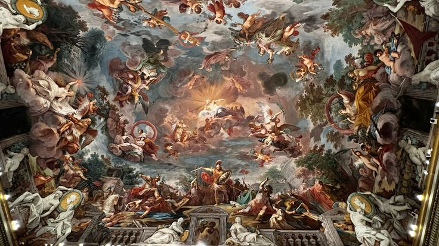
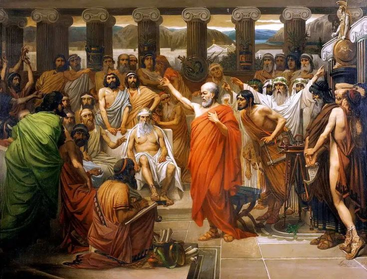
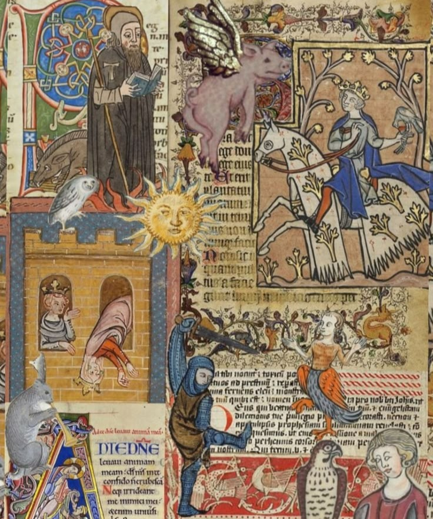
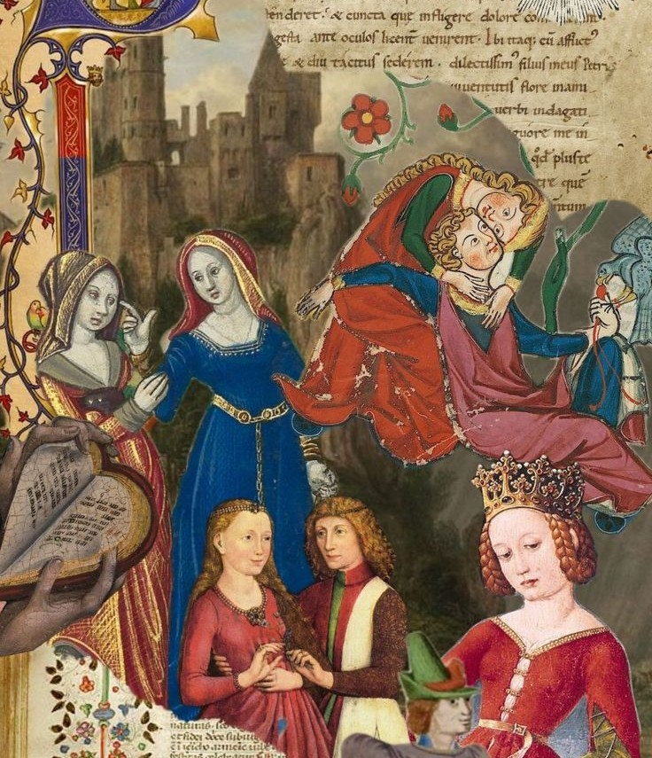
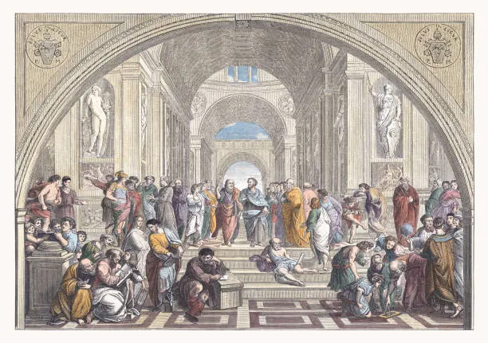
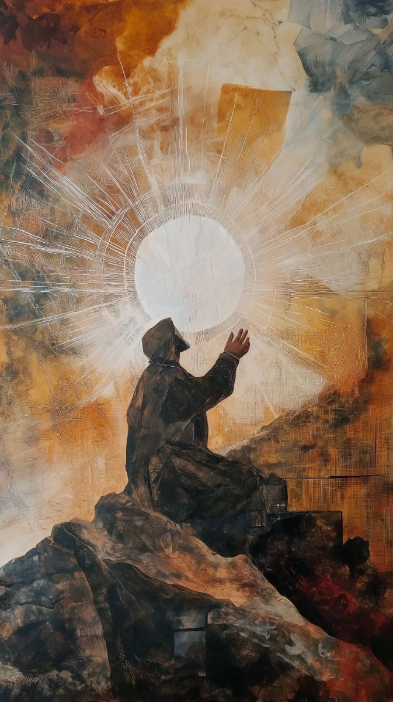
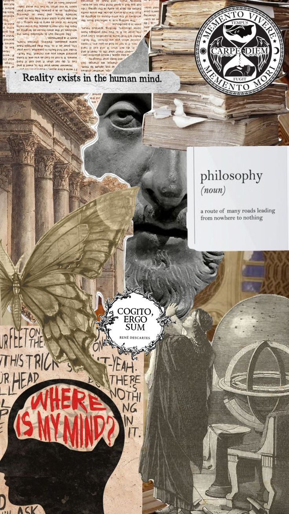
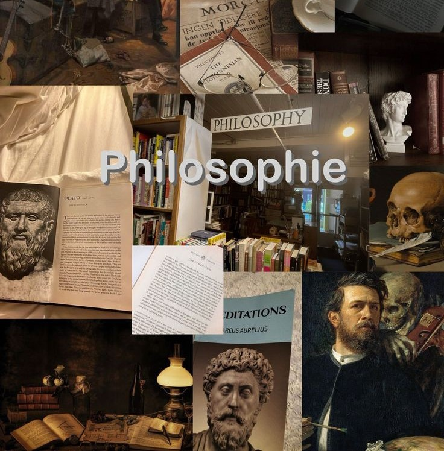

Philosophy began over 2,500 years ago in Ancient Greece, where thinkers stopped accepting myths as explanations and instead searched for answers through logic, observation, and reason. Their questions about existence, knowledge, justice, and the universe laid the foundation for nearly every field of modern learning. The history of philosophy is the systematic study of the development of philosophical thought. It focuses on philosophy as rational inquiry based on argumentation, but some theorists also include myth, religious traditions, and proverbial lore.
Western philosophy originated with an inquiry into the fundamental nature of the cosmos in Ancient Greece. Subsequent philosophical developments covered a wide range of topics including the nature of reality and the mind, how people should act, and how to arrive at knowledge. The medieval period was focused more on theology. The Renaissance period saw a renewed interest in Ancient Greek philosophy and the emergence of humanism. The modern period was characterized by an increased focus on how philosophical and scientific knowledge is created. Its new ideas were used during the Enlightenment period to challenge traditional authorities. Influential developments in the 19th and 20th centuries included German idealism, pragmatism, positivism, formal logic,linguistic analysis,phenomenology existentialism, and postmodernism.
Arabic–Persian philosophy was strongly influenced by Ancient Greek philosophers. It had its peak period during the Islamic Golden Age. One of its key topics was the relation between reason and revelation as two compatible ways of arriving at the truth. Avicennadeveloped a comprehensive philosophical system that synthesized Islamic faith and Greek philosophy. After the Islamic Golden Age, the influence of philosophical inquiry waned, partly due to Al-Ghazali's critique of philosophy. In the 17th century, Mulla Sadra developed a metaphysical system based on mysticism. Islamic modernism emerged in the 19th and 20th centuries as an attempt to reconcile traditional Islamic doctrines with modernity.
Indian philosophy is characterized by its combined interest in the nature of reality, the ways of arriving at knowledge, and the spiritual question of how to reach enlightenment. Its roots are in the religious scriptures known as the Vedas. Subsequent Indian philosophy is often divided into orthodox schools, which are closely associated with the teachings of the Vedas, and heterodox schools, like Buddhism and Jainism. Influential schools based on them include the Hindu schools of Advaita Vedanta and Navya-Nyāya as well as the Buddhist schools of Madhyamaka and Yogācāra. In the modern period, the exchange between Indian and Western thought led various Indian philosophers to develop comprehensive systems. They aimed to unite and harmonize diverse philosophical and religious schools of thought.
Central topics in Chinese philosophy were right social conduct, government, and self-cultivation. In early Chinese philosophy, Confucianism explored moral virtues and how they lead to harmony in society, while Taoism focused on the relation between humans and nature. Later developments include the introduction and transformation of Buddhist teachings and the emergence of the schools of Xuanxue and Neo-Confucianism. The modern period in Chinese philosophy was characterized by its encounter with Western philosophy, specifically with Marxism. Other influential traditions in the history of philosophy were Japanese philosophy, Latin American philosophy, and African philosophy.
Although philosophy asks universal questions, every civilization has developed its own unique way of understanding reality, knowledge, morality, and the purpose of life. Explore the major philosophical traditions from around the globe.
Explore the Golden Age of Islamic thought through Al-Kindi, Al-Farabi, Avicenna, Averroes, Al-Ghazali, and Ibn Khaldun.
Discover the philosophical traditions of medieval Europe, Scholasticism, and the relationship between faith and reason.
Learn how humanism, science, and classical learning transformed European philosophical thought during the Renaissance.
Explore the Age of Reason through Locke, Hume, Rousseau, Voltaire, and Kant, whose ideas shaped modern democracy and science.
Travel through the great eras of philosophy and discover how humanity's understanding of truth, knowledge, morality, and existence has evolved over more than 2,500 years. From the questioning of the ancient Greek philosophers to the rich traditions of Indian, Chinese, and Islamic thought, and from the Renaissance and Enlightenment to modern and contemporary philosophy, follow the ideas, thinkers, and movements that transformed how humanity understands the world and its place within it.

Ancient Greece spanned the mainland, the Aegean islands, and coastal Asia Minor, flourishing from roughly 1200 BCE to 323 BCE. Its mountainous geography fostered the development of independent city-states (poleis) like Athens and Sparta, while a shared language, religion, and the worship of gods on Mount Olympus united the wider culture. Most people lived throughout Greece in farms and small villages rather than the cities themselves. On a map, the shape of ancient Greece is often described as resembling an outstretched hand, its fingers of land and islands reaching out toward the Mediterranean Sea.

The birthplace of Western philosophy. Greek thinkers began asking questions about nature, justice, ethics, politics, and the meaning of life through reason instead of mythology.Ancient Greek philosophy arose in the 6th century BC. It dealt with a wide variety of subjects, including astronomy, epistemology, mathematics, political philosophy, ethics, metaphysics, ontology, logic, biology, rhetoric and aesthetics. Greek philosophy continued throughout the Hellenistic period and later evolved into Roman philosophy. Greek philosophy has influenced much of Western culture since its inception, and can be found in many aspects of public education. Alfred North Whitehead once claimed: "The safest general characterization of the European philosophical tradition is that it consists of a series of footnotes to Plato".

Early medieval philosophy was a period of intellectual synthesis where thinkers reconciled Christian theology with Greek philosophy, particularly Platonism and Neoplatonism. Following the collapse of the Western Roman Empire, monasteries and cathedral schools became the primary centers for learning, focusing on the relationship between faith and reasonMedieval philosophy began in the wake of the fall of the Roman Empire in the 4th and 5th centuries, as thinkers worked to understand the relationship between faith and reason. This early period was closely connected to Christian thought and theology, with most philosophers being churchmen who explored how classical ideas could deepen understanding of religious truth.

Scholasticism was the dominant intellectual movement of medieval Latin Christendom, characterized by the rigorous application of Aristotelian logic and dialectical disputation to synthesize Christian theology with philosophical reason. It flourished primarily between the 11th and 15th centuries, evolving from early cathedral school debates into a sophisticated university-based disciplineAs Western Europe rediscovered the works of Aristotle and Neoplatonists like Plotinus, philosophy entered a new phase known as Scholasticism. Centered in the newly founded medieval universities, scholastic thinkers built rigorous systems that used reason and classical logic to illuminate the truths and mysteries of the Christian faith.

Renaissance philosophy marked a pivotal shift from the theocentric and Scholastic focus of the medieval era to an anthropocentric worldview centered on humanism, individualism, and the rediscovery of classical antiquity. This intellectual movement emphasized human potential, dignity, and rational inquiry, moving away from strict reliance on Church authority toward the study of civil society, nature, and political power.The Renaissance revived interest in Ancient Greek philosophy. Scholars emphasized human potential, scientific inquiry, and individual thinking, helping Europe transition into the modern age.

The Age of Enlightenment, also known as the Age of Reason or simply the Enlightenment, was a period of intellectual and cultural flourishing in Europe and Western civilization, emerging in the late 17th century in Western Europe. It reached its peak in the 18th century as its ideas spread more widely across Europe and into the European colonies in the Americas and Oceania. Characterized by an emphasis on reason, empirical evidence, and the scientific method, the Enlightenment promoted ideals of individual liberty, religious tolerance, progress, and natural rights. Its thinkers advocated for constitutional government, the separation of church and state, and the application of rational principles to social and political reform.Enlightenment philosophers believed that reason, science, and education could improve society. Their ideas greatly influenced democracy, human rights, and modern political systems.

The 19th century marked a decisive shift from Enlightenment rationalism toward movements that questioned traditional metaphysics and emphasized human experience and consciousness. German Idealism (Kant, Hegel) explored the mind's role in structuring reality, while the roots of Existentialism (Kierkegaard) turned philosophy toward individual meaning and the crisis of faith. Utilitarianism (Bentham, Mill) grounded ethics in maximizing happiness, and Materialism and Positivism (Comte) sought to apply scientific methods to society, alongside a Romanticism that celebrated emotion and individuality.

These 19th-century currents dismantled medieval certainties and set the stage for a century of rapid change. Existentialism reached its peak with Sartre's radical account of freedom and responsibility, while Analytic Philosophy (Russell) brought logic and precise language to the center of philosophical method. Thinkers like Hannah Arendt turned philosophy toward political life, totalitarianism, and the nature of evil. Today, philosophy continues to grapple with consciousness, technology, artificial intelligence, and what it means to live a meaningful life in an ever-changing world.
"The unexamined life is not worth living."
— Socrates
Philosophy did not end with the ancient Greeks. Every generation has asked new questions about truth, morality, knowledge, and existence. Today, philosophy continues to influence science, psychology, politics, economics, artificial intelligence, and everyday life.